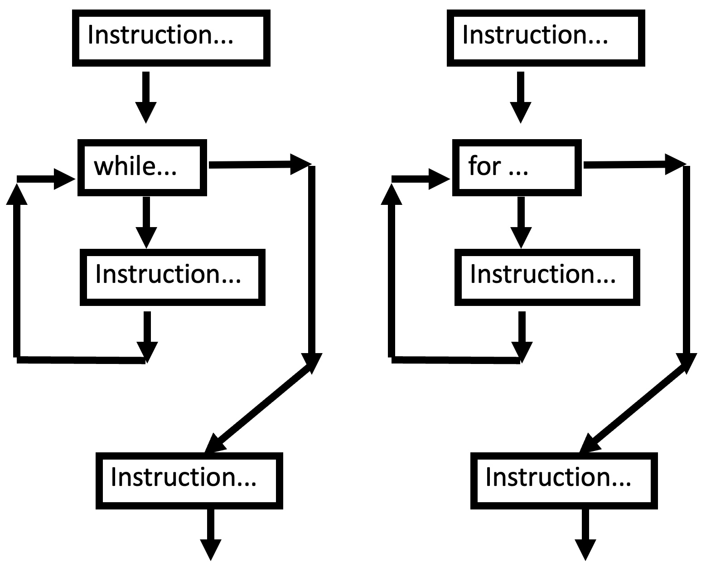

P02: Loops!¶
Loops are a control structure that allows repeated execution of the same instructions. The canonical loop is a while loop. It checks if a condition is met, and executes its code block if it is met. If the condition is not met, it proceeds to the instructions following its code block. All loops basically have this structure, however, some are a bit more convenient, and less error prone than while loops. In particular for loops are a great convenience which we will cover here.
Here is a picture of the loop control flow:

Lists¶
So far we have dealt with atomic data types. We will also want to work with compound data types that contain lots of things. The most common compound data type in Python is a list. A list is a sequence of objects, which can be created with square brackets: [1, 2, 3].
my_list = [1, 2, 'a', 3]
print(my_list)
[1, 2, 'a', 3]
we will talk much more about lists and sequences later, but for the sake of this week’s problem set, we need to learn how to add items to a list, and how to loop through a list.
adding to a list¶
We can add to an existing list with the .append() method.
print(my_list)
my_list.append('cow')
print(my_list)
[1, 2, 'a', 3]
[1, 2, 'a', 3, 'cow']
for loop iteration over a list¶
If we want to do something to each member of a list, we want to iterate over that list in a for loop. To accomplish this, we will use the for loop control structure:
for x in iterable:
do stuff
do more stuff
What this notation is doing is generating a “loop”, which iterates over all the elements in iterable. On each iteration it assigns the next item from the iterable to x, and then executes the for loop code block (indicating by indentation). We need not worry about what an “iterable” is exactly just yet. For now, it is sufficient to say that a list is an iterable, so it can be iterated over with a for loop like the above.
my_list = [1, 2, 'a', 3]
for item in my_list:
print('current item is: ', item)
current item is: 1
current item is: 2
current item is: a
current item is: 3
range()¶
It is very common to run a for loop over some sequence of integers. So it would be helpful to have a function that defines a sequence of integers for us.
The command range does that.
The syntax for the range command is
range(start, stop)
and it generates an iterable that we can iterate over (such as in a for loop) with the integers starting with start and ending at stop-1 (in steps of 1 – default if no 3rd argument is provided)
for i in range(5, 21):
print(i)
5
6
7
8
9
10
11
12
13
14
15
16
17
18
19
20
Note that 5 was printed, but 21 was not!
If we provide only one argument, it assumes that first=0 and treats the argument we provide as stop.
for i in range(10):
print(i)
0
1
2
3
4
5
6
7
8
9
Note that 0 was printed, but 10 was not!
continue¶
continue is a special operator to jump ahead to the next iteration of a loop.
for item in range(6):
if item == 2:
continue
print(item)
0
1
3
4
5
note that we “skipped 2”. In practice what happened is that we stopped the iteration (and moved onto the next one) before the print statement was reached.
for item in range(6):
print("start of for block for:", item)
if item == 2:
continue
print("end of for block for:", item)
start of for block for: 0
end of for block for: 0
start of for block for: 1
end of for block for: 1
start of for block for: 2
start of for block for: 3
end of for block for: 3
start of for block for: 4
end of for block for: 4
start of for block for: 5
end of for block for: 5